| 日付 | 2018年8月10日（金） - 2018年8月12日（日） |
|---|---|
| メンバー | 家族（妻、長女・7歳、長男・5歳） |
| アクセス | 車 |
2日目
爽やかな朝。きれいに晴れ渡っている。
山の麓にあるキャンプ場なので、天候は山と似ている。
しかしテントを張った場所は水の通り道だったようで、タープの下は水浸しだ。
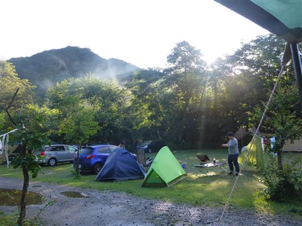
朝食をとる。キャンプ中にやることは特に決めていないので、のんびりだ。
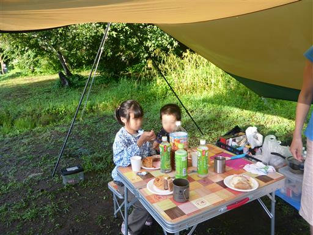
遠くに武尊山の一角が見える。前武尊のあたりだろうか？
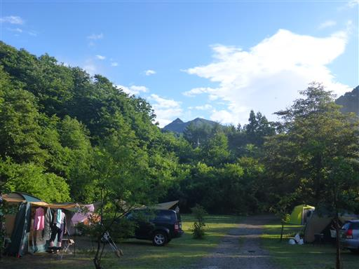
息子は本日もトンボ捕りに夢中。
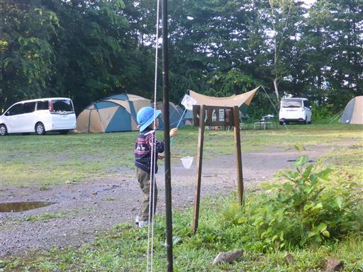
娘の肩にトンボが止まる。長い間動かなかったので娘はご満悦。
羽を乾かすためか、このキャンプ場のトンボはあまり飛ばず、容易に捕まえられる。
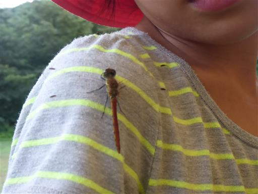
ノコギリカミキリだろうか？虫かごのツルツルの壁も少しは登ることができる。
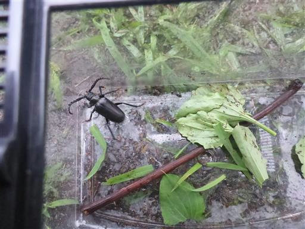
暇なので、車で近くの川場田園プラザに行ってみる。
この近辺では有名な超大型の道の駅で、多くの人で賑わっている。
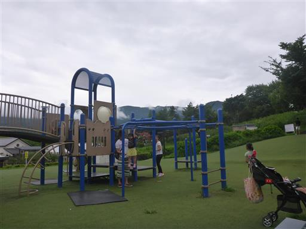
ブルーベリー畑。持ち帰りは禁止だが、自由に捕って食べることができる。
しかしあまり良い実は残っていない。
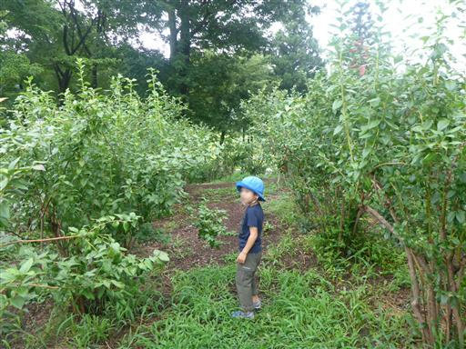
高台に到着すると、虚空蔵展望台の標識を発見。行ってみることにする。
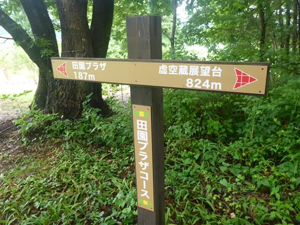
ちょっとした登山道だ。周囲に人影は全くない。
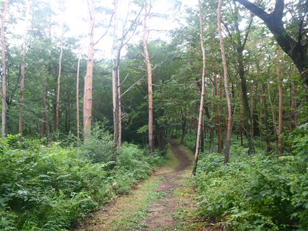
古びた階段を走って登る。
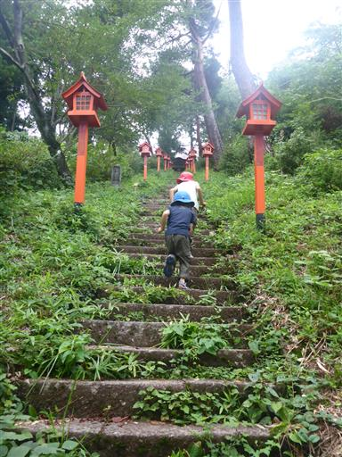
虚空蔵堂に到着。山中にしては立派な建物だ。
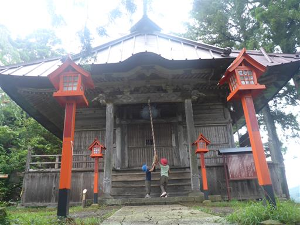
隣の建物の上からぶら下がっている紐に、なんとセミの抜け殻が付いている。
地中から上まで登って行って、そこから紐を下りたのだろうか？器用な奴だ。
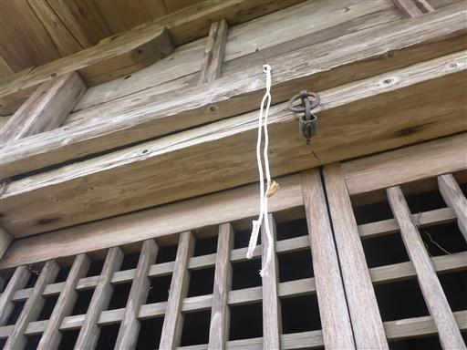
虚空蔵堂から少し歩くと展望台に到着する。
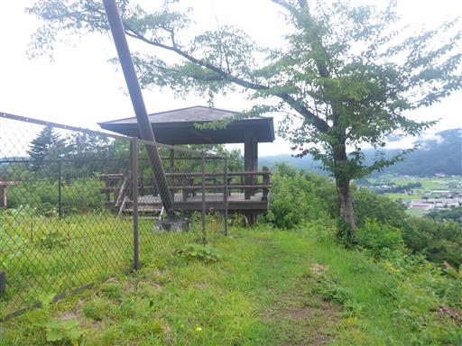
それなりに展望が良いが、雲が多いのが残念だ。
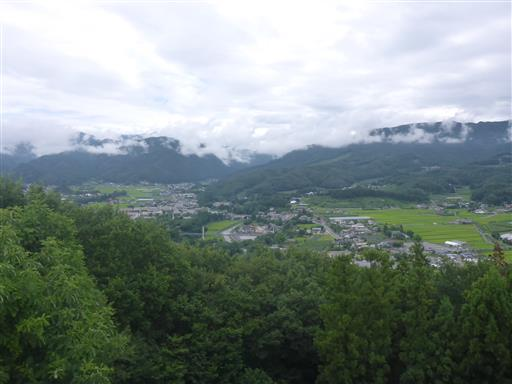
こちらは上州三峰山。見事なテーブルマウンテンだ。
6年前に訪れた懐かしい山でもある。
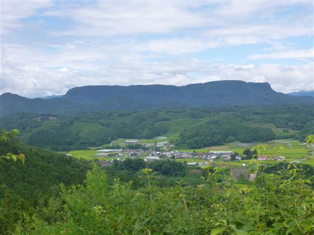
下山は登りとは異なる道を歩く。
地図は持っていないが、標識に田園プラザと記載されているので、問題ないだろう。
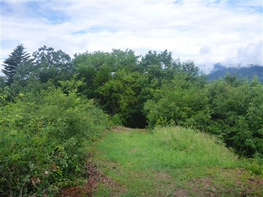
延々と続く長い階段。
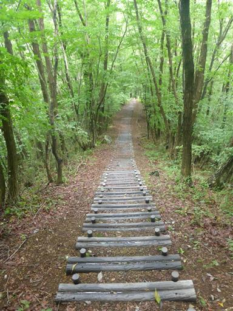
下り着いたのは川場田園プラザのP7。P7まで車が埋まるほど人が来るのだろうか？
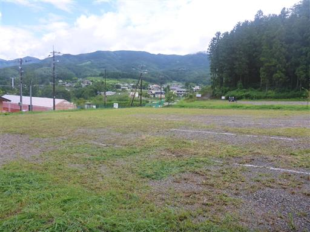
田園プラザに戻ってきたら、昼食をとるためキャンプ場に戻る。
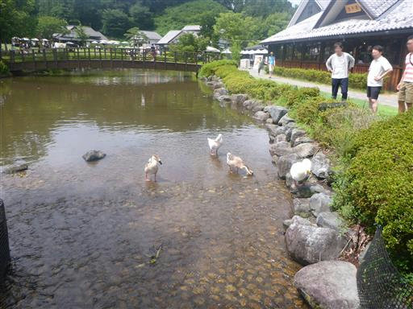
本日の昼食はカップラーメン。
先日カップヌードルミュージアムで自分で作ったカップラーメンだ。
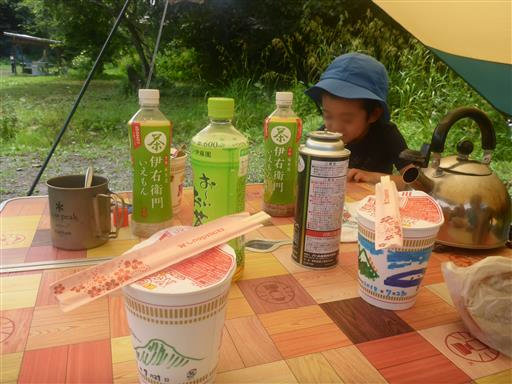
午後は水着に着替えて川遊び。
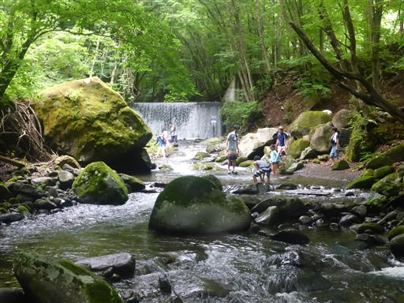
上流は堰堤があるため、下流の方まで歩いて遊ぶ。
標高の高い山の上流にある川のため、水はかなり冷たい。
足をつけているだけでも結構つらく、泳ぐことは無理そうだ。
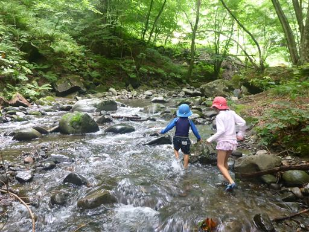
息子は流れが激しいところに果敢に挑戦している。寒くないのだろうか？
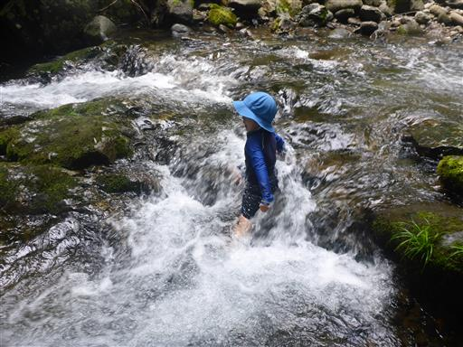
川からの帰り道、美しいクロアゲハが横たわっていた。
まだ動いているが、おそらく車に轢かれたのだろう。
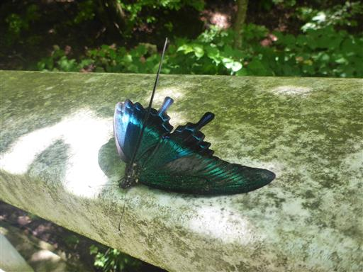
川遊びで体が冷えたので近くの温泉に行って温まる。
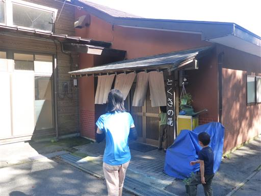
さっぱりしたらキャンプ場に戻ってくる。今日も大きな入道雲が出ている。
少々雨は降ったが、幸い雷はなかった。
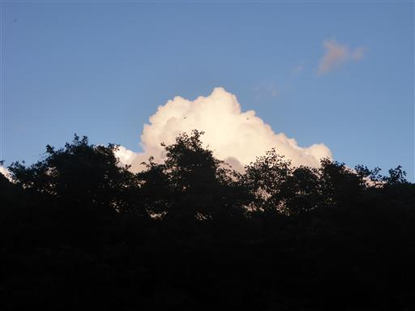
夜はヘッドライトをつけて散策に出かけようとしたが、
息子が朝から履いていたサンダルで豆ができてしまって痛がっていたため断念。
でもヘッドライトは喜んでいた。
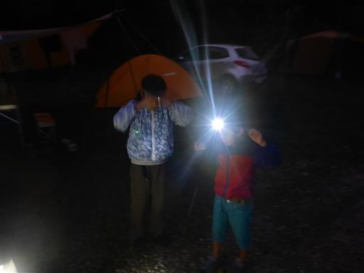
3日目
雨で濡れたテントを片付けて撤収。田園プラザで昼食をとって帰宅する。
初めてのテント泊はおおむね上手くいったが、ちょっと時間を持て余し気味だった。
今後軽い山とキャンプを併せると、都合がよさそうだ。
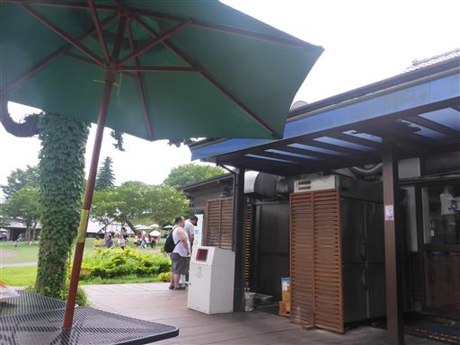